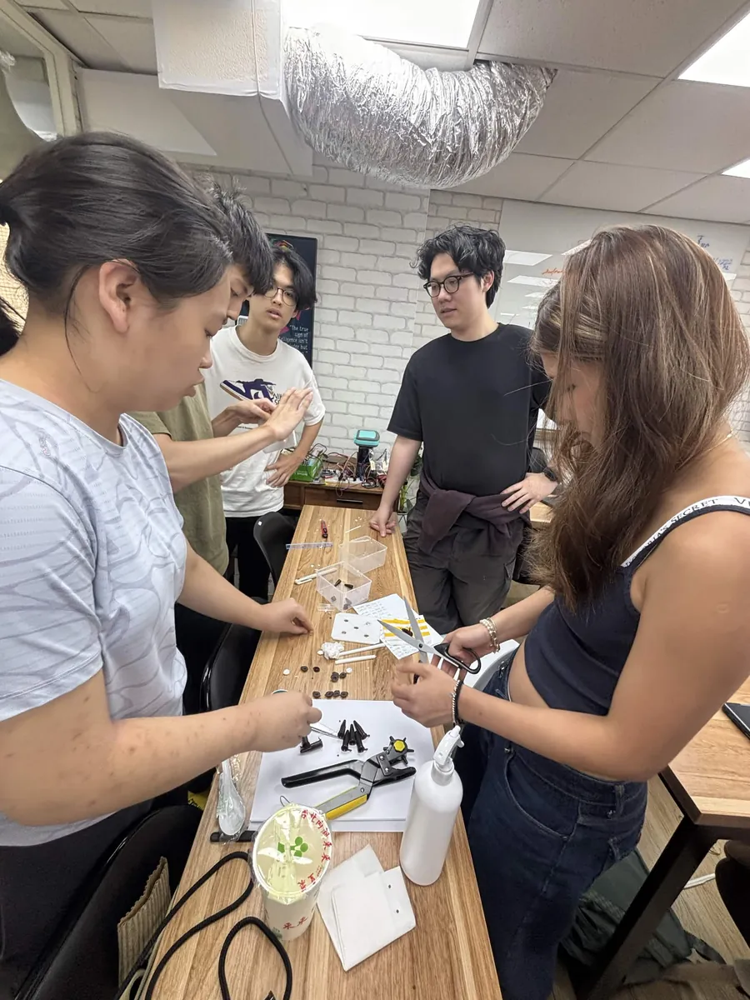

Take it and change it
Everything on this wiki, text, figures and files, is under the CC BY 4.0 licence. Take it, change it, and say where it came from.

On this page
ReLEAF was built twice over: once as a project for our own fields, and once as a set of tools, protocols, devices and lessons a later team can pick up. Six of them are finished enough to hand on. Each one below opens with what it is, what you can download, and the limit we have not yet cleared.
Text in orange on this wiki was not written by the student team; black text is the students’ own.
Thirty-two entries in five modules: a green-light switch in Bacillus subtilis with a secreted plant protectant behind it.
We organized the construct into separate functional modules instead of treating it as one fixed design, so that an individual component can be modified or replaced on its own. That makes the system easier to build, to troubleshoot and to adapt. Four modules carry the light circuit; a fifth expresses the cargo constitutively, and it is that fifth one every bench result on this wiki was produced with.
Eighteen of the thirty-two entries are new this year, eight come from the SubtiToolKit and six reuse one of five distinct Registry accessions.

This module supplies phycocyanobilin (PCB), the chromophore the CcaS-m3 photoreceptor needs in order to sense light. It converts endogenous heme into PCB inside the cell.
It is built as a standardized composite part. The bacterial promoter PtagC and a ribosome binding site control transcription and translation. These are followed by the ho1–pcyA fusion CDS, which encodes heme oxygenase 1 fused to phycocyanobilin:ferredoxin oxidoreductase, the two enzymes that make PCB. The transcriptional terminator L3S2P21 closes the module and gives reliable termination.
This module carries the engineered green-light photoreceptor system that detects external light.
The constitutive promoters PlepA and PliaG give baseline transcription of the elements downstream. For translation initiation the module uses RBS0, a strong ribosome binding site optimized for B. subtilis. At its center is the ccaS-m3 CDS, derived from the cyanobacterial CcaS/CcaR system: once loaded with the PCB that module 1 supplies, CcaS-m3 detects green light and autophosphorylates, which relays the signal downstream.
This module passes the signal from the sensor to the gene expression system downstream.
The constitutive promoter Pveg holds expression steady and initiates translation of the response regulator. The functional component is the ccaR CDS, which receives a phosphoryl group from the activated CcaS photoreceptor and then activates transcription.
This module is the output: it turns the green-light signal into targeted expression and secretion of the protectants.
It is controlled by the synthetic light-responsive promoter PcpcG2-veg together with EEBD-RBS0, a composite ribosome binding site carrying an Escherichia coli expression blocking device — a B0015 terminator flanked by recombination sites — which suppresses toxic protein production during the intermediate cloning steps.
Several coding sequences were evaluated in this position, among them Csn-AcdS-Histag and SamyQ-AcdS-Histag v2t1, which fuse ACC deaminase to a secretion signal peptide and a C-terminal 6×His tag. Six of the collection’s thirty-two entries, the SamyQ fusions among them, are marked on Parts as designed: a sequence exists, in most cases a synthesis plasmid with it, and no bench step after that is recorded.
The largest module, fourteen entries, holds all three protectant cargoes behind a constitutive promoter, with the shuttle vector that carried them into B. subtilis. It exists because a light-gated cassette cannot be tested until the cargo itself expresses and secretes, so the constitutive series was built first and every protein, plant and reactor result on this wiki came out of it.
For a future team this is the honest entry point: build the expression module, confirm the cargo, and only then put the light circuit in front of it.
Together the standardized modules work as a flexible toolkit that turns complex optogenetic regulation into a system where a future team can substitute its own output module. Breaking the system into separate functional units means components can be mixed, upgraded or troubleshot without redesigning the whole circuit, which lowers the barrier to building light-driven circuits in B. subtilis.
Two more things to know before reusing them. Every module was assembled with the SubtiToolKit Golden Gate system in Bacillus subtilis [1], so the parts fit that framework and not a standard E. coli chassis, and the light-driven cassette uses the CcaS/CcaR green light system [2]. Every hardware track ran on B. subtilis 168, wild type or secreting ACC deaminase constitutively, so none of those numbers is the light switch doing anything. Which modules assembled, which failed, and what the sequencing said are on Parts and Engineering.
A standardized workflow for evaluating plant responses under controlled growth and stress conditions, so that a protectant result can be attributed to the protectant.
Arabidopsis thaliana is one of our laboratory plant models. The protocol fixes temperature, photoperiod, nutrient conditions, growth medium, plant age and developmental stage, and hydroponic conditions, and adds controlled stress procedures for salinity, long-term heat and short-term heat shock. Each experiment records stress intensity, duration, plant age and treatment conditions, so it can be run again.
The readouts are fixed too: root length, fresh weight, chlorophyll content, MDA, anthocyanin, total protein and relative gene expression. Root length is traced by hand in ImageJ from the baseline drawn on the vertical agar plates. Leaf area stays qualitative, because leaves overlap and obstruct the measurement.
| What is fixed | Value |
|---|---|
| Plant material | Arabidopsis thaliana Columbia (Col-0 accession) |
| Medium | Half-strength Murashige and Skoog medium, 1% sucrose, pH 5.7 to 5.8 |
| Plate format | Circular horizontal plates, 30 mL agar; vertical plates, 50 mL agar |
| Vernalization | 4 days in darkness at 4 °C |
| Germination | 4 days in the growth chamber under standardized growth conditions |
| Seedling selection | Seedlings of similar developmental stage and root length |
| Root reference line | Horizontal line approximately 3 cm from the top of the square plate |
| Plate angle | Vertical with a slight backward tilt around 15° |
| Observation window | Approximately 10 days, photographed daily |
Three of those values moved as the runs went on, and Plants carries the revised ones: vertical plates went from 0.8% agar to 0.6% once roots could not penetrate, sucrose went to 1% from set 4, and seedlings were transferred at seven days, not four, from the ACC deaminase sets onward. Take the PDF as the frame and those three as the current settings.
| Component | Amount |
|---|---|
| ½ MS medium powder | 2.3 g |
| MES buffer | 0.5 g |
| Sucrose | 10 g |
| Agar | 10 g |
| Distilled water | To 1 L |
For vertical plates
For circular horizontal plates

1. Trehalose. Application: mix with agar mixture before solidification.
½ MS agar plate preparation (salinity test trial plates). The following protocol is for 600 ml of agar, 12 agar plates: control (no trehalose) x control (no NaCl), control x 150 mM NaCl, control x 250 mM NaCl, and the same three NaCl conditions at 1 mM, 5 mM and 10 mM trehalose.
Prepare the following:
| ½ MS medium powder (w/o sucrose) | 1.38 g |
| MES buffer | 0.3 g |
| Distilled water | 600 ml |
| Sucrose (1%) | 6 g |
| Agar powder (1%) | 6 g |
| Trehalose concentration | Amount of trehalose (for 50 ml of medium) |
|---|---|
| 0 mM | 0 µL |
| 1 mM | 500 µL |
| 5 mM | 2500 µL |
| 10 mM | 5000 µL |
2. CH bio peptide. Application: top drench solution on agar surface with treatment timings.
(After plants have been grown on agar in growth chamber for 4 days)
| NaCl concentration | Dilution factor |
|---|---|
| 0 mM | 0 µL |
| 75 mM NaCl | 500 µL |
| 100 mM NaCl | 2500 µL |
| 150 mM NaCl | 5000 µL |
3. ACCD. Application: foliar spraying.
(After plants have been grown on agar in growth chamber for 4 days)
Note that the 0 mM NaCl group receives the same volume of sterile water treatment as the protectant/NaCl to ensure the equivalent amount of liquid exposed to the plants across groups.
Volume applied: 1.67 ml per plate, delivered as three sprays over a 78.5 cm² plate.
LEA14. Application method: purified protein solution.
For consistency with the ReLEAF salinity-testing platform, apply purified LEA14 externally to the plant rather than incorporating engineered bacteria into the plant experiment.
Recommended standardized delivery format for comparison: foliar application using the same spray volume and number of sprays as the ACCD trial.
BoPEP4. Application method: purified peptide solution.
To keep comparisons between ReLEAF protectants consistent, use the same foliar spray framework used for ACCD unless a different delivery method is experimentally shown to perform better.
The same protocol can be used to investigate when protectants should be released.
| Treatment | Timing |
|---|---|
| Pretreatment | Protectant applied 1 day before NaCl stress |
| Cotreatment | Protectant applied at the same time as NaCl stress |
| Post-treatment | Protectant applied 1 day after NaCl stress |
This structure was used in later protectant experiments to compare timing-dependent rescue effects. For a simple first comparison, use cotreatment for all three protectants.
Observe plants for approximately 10 days. Take standardized photographs daily using the same black background, the same lighting, the same plate orientation, and the same camera distance with quality control.

Daily: root growth, leaf area or plant size, visible phenotype, survival.
Data collection: fresh weight, chlorophyll content, final root length.
For protectant testing groups: MDA, total protein, enzymatic activity testing.
Experimental logic. Salt only determines the effect of salinity stress. Protectant only determines whether the protectant itself affects plant growth. Salt plus protectant determines whether the protectant rescues plants from salinity stress. Pretreatment against cotreatment against post-treatment determines when protectant delivery is most effective.
Read the protocol beside Plants, which says what the runs could and could not settle: the salt ladder is calibrated, from 74.95 to 1.36 mm of root over 0 to 150 mM NaCl; the CH Bio peptide gave the clearest rescue at 100 mM; trehalose rescued in two sets and no dose held across all six; and our own three candidates have not shown an effect yet. Sets 1 to 3 have no chlorophyll data, because the protocol was not yet standardized when they ran. That is the gap this contribution exists to close.
Four devices, each built because the equivalent was unavailable, unaffordable or undocumented. Each one’s hardware page carries its dimensions, its materials list and, for the three printed instruments, the mesh files, so a later team can rebuild it without redesigning it.
A perfusion reactor that keeps engineered B. subtilis in the loop and lets secreted protectant out through a hollow-fiber membrane.
Cultivation results are hard to compare because batch systems change throughout a run: nutrients deplete, waste accumulates, and cell density and product concentration move together, with no way to set one without moving the other.
Researching bioreactors elsewhere, we never found a group using a hollow-fiber membrane to separate bacteria from a produced protein, so we developed our own continuous-flow system to separate the protectant from the cells that make it. That search showed us a broader problem: a system that harvests a secreted product is only reproducible if the hydraulic conditions it runs at are characterized and reported.
Our first prototypes tested flow rate alone, or plain B. subtilis growth. We then iterated toward a hollow-fiber membrane system that retains cells in the loop while secreted protectant passes into the permeate, with an operating point established by hydraulic characterization and not by trial and error.

One number to settle before you copy the module. Our own records give it as both 150 cm² with eight fibers, which is the vendor sheet, and 200 cm² with eleven, which is what the 16 August bench check agrees with; Biomanufacturing works through the arithmetic and stays with eleven. Measure your own cartridge; do not take either figure from us.
The membrane that separates product from cells is also the containment barrier between engineered B. subtilis and the plant environment outside. For reuse the specification is a PES hollow-fiber module rated at 0.2 µm, run in crossflow with the cells on the lumen side.
The hollow fiber membrane physically blocks bacteria from leaving the lumen side, since the pore size of the membrane (0.2µm) is much smaller than the cell size of B. subtilis (0.25 to 1.0µm in diameter). To validate this theory, a simple test was conducted. When the bioreactor was running, we collected medium from the lumen and shell sides and plated them. After 24 h at 37 °C, the samples were compared with each other.
Fouling has one trend behind it: across 42 h on 14 to 16 October the pressure the module needed beyond clean water at the same flow rose from 2.0 to 3.8 kPa, nothing had to be cleaned, and no replacement interval follows from a single run. A droplet sensor and the transmembrane pressure line are both fitted to flag a leak, and neither has been tested.
What has not been measured is how much protectant crosses: there is no shell-side concentration and no transfer rate, and the two records read the faint Western blot band differently, so membrane passage is still unverified. The containment claim as a safety argument is on Safety; the plating evidence is on Results.
A low-cost in-line photometer that reads OD600 inside the loop, without pulling a sample.

Growth data is hard to compare because OD600 is conventionally measured by pulling a grab sample and reading it in a benchtop spectrophotometer: a manual, low-frequency, contamination-prone process that interrupts the run it is meant to describe. Existing tools require sampling and medium extraction, and we wanted to remove the human error that derails data accuracy. The broader problem is that continuous cultivation is a continuous process and the measurement of it is almost always discontinuous.
Our in-line photometer monitors OD600 without removing sample from the loop. The device integrates a 600 nm source, a paralleling lens for a parallel light path, a 90:10 beam splitter that sends a tenth of the beam to a reference channel, two GY-302 lux sensors on one I²C bus and a 2 mm flow cuvette in the bioreactor loop. It runs with no computer attached and reports OD600 from the sample-to-reference ratio about every ten minutes. Five build cycles took it from a bench light path to the instrument that ran for 400 hours, and a second, slimmer design followed it in October.
On the titanium dioxide series each instrument tracks the mass added at R² above 0.999, and the raw readings sit within a median 3.8% of the BioDrop with no correction applied. On the silica series the two regress against each other at a slope of 1.001 with a constant offset of about 0.12 OD, ours reading lower at every point. On that evidence we treat calibration as unnecessary rather than pending.
The dashboard, the fault model that flagged this instrument 26.7 h before it failed, and the gate that turned away 31 of 1,083 reading windows are on Digital Twin.
A dual-wavelength LED array that lights twenty-four cultures at a known intensity, with every LED measured before it drove anything.

Optogenetic characterization is hard to compare because the light dose a culture receives depends on LED output, distance, vessel geometry and crosstalk between neighbouring wells — factors that vary between setups and are seldom reported in enough detail to reproduce. In our research we found existing light plate hardware costly enough to be a barrier for anyone trying to get trustworthy light intensity at every position on a plate.
We built the array to map protectant expression against green and red light intensity through the CcaS/CcaR system. It is a four-by-six holder of twenty-four cultures, lit at about 535 nm or about 670 nm, with an Arduino driving three MOSFET channels by PWM. Forty LEDs were measured one at a time and matched in fours, which brought each group within 0.4 to 1.8% of itself, from spreads of 26% in green and 22% in red before sorting.
Matching alone did not do the job we expected. Even after sorting, the groups sat too close together to form three separate intensity tiers, so the tiers are set by the PWM duty cycle instead and the matching serves to make the four cultures in a group comparable to each other. That is the finding worth passing on: sort the LEDs for replicate consistency, set the dose in firmware.
A 3D-printable floating plate that holds thirteen Arabidopsis seedlings at one depth, assembled without adhesives or fasteners.
Plant experiments are hard to compare because small differences in spacing, nutrient exposure, root position or container geometry introduce variation on their own.
Visiting a laboratory at National Taiwan University, we saw older hydroponic setups stored away and no longer in use. A hydroponic system that exists is not necessarily one another lab can rebuild: without standardized dimensions and clear instructions it stays a one-off.
The first prototype was a plate held at a set height and corrected by hand. The second floated, on corner poles carrying trim washers that were later removed. The third is the one we publish: a smaller footprint, clip-in handles, no ballast, sixteen printed pieces, and thirteen bores in rows of four, five and four on a 21.59 mm pitch. Sealed air of 42.27 cm³ across its two pontoons puts the drawn freeboard at 9.2 mm, and every 3.5 g added sinks it about a millimetre.

The platform standardizes plant spacing, nutrient exposure, root positioning and experimental geometry. On the plant side it is now used inside a black light-blocking box of 14.7 by 11.5 by 6.2 cm, which is what the salinity runs on Plants were grown in.
Two digital contributions that work together: software that keeps a live picture of the reactor, and the spatial analysis that tells it where protection is needed.
The ReLEAF reactor is meant to stand near farmland, where nobody can constantly sample or check the culture. Our software therefore has to do what an operator at the bench would do: watch reactor conditions, judge whether sensor data can be trusted, predict how the culture will grow, and decide when to make protectant. A digital twin maintains a dynamic representation of the physical system, with information passing continuously in both directions, so the virtual copy reflects real-time changes and can be used to hold the physical system at the condition it should be in.

It holds what the field needs beside what the reactor can deliver. The reactor side supplies biomass, growth, pressure, flow, membrane state and sensor reliability; the regional side supplies crop-stress risk from the spatial analysis below. Directly measured, operator-commanded, calculated and planned values are kept separate, so every number on screen has a clear source. Those inputs are what the system uses to assess whether the culture is ready and whether protectant production should be started.
Six reactor runs are on record, from the first prototype in June to 41.8 continuous hours on 14 to 16 October. The strongest piece of the handover is a forecast we registered before that run: on 1 October we published a growth rate of 0.2986 h⁻¹, with a 90% interval of 0.2705 to 0.3300, fitted on light-plate data. The October run returned 0.286 ± 0.010 h⁻¹, inside the interval. A fault model trained on the first 120 h of the 434-hour run flagged the failing photometer 26.7 h early, at a 6.1% false-alarm rate, and the short-horizon filter beats persistence by 41% at two hours.
software/rig-app/.Plant stress is not spread evenly. Temperature, salinity, rainfall and agricultural productivity vary across Taiwan, so each farming region carries its own combination of risk. We used GIS to connect environmental conditions with agricultural outcomes and to see where climate-related stress overlaps with important crop-producing regions.
For ReLEAF this matters because the system is designed to answer local conditions. Treating every farm alike would waste that, and spatial data instead shows where heat stress is more severe, where salinity risk is higher, which agricultural regions may be more vulnerable, and where localized deployment could have the greatest relevance.

In our analysis of Taiwan we compared climate variables with regional rice-yield data to explore how environmental conditions relate to agricultural productivity. The fertilizer and agrochemical footprint was built the same way, aggregating 2,792,536 individual land parcels by township into 346 demand nodes. It moved us from looking at individual farms to reading broader geographic patterns.
GIS can reveal spatial patterns, but interpreting large environmental datasets is still difficult for a non-specialist. We therefore wrote a broad, reusable prompt: a structural guideline an LLM follows to turn raw data with inconsistent coordinates, software and formatting into GeoJSON, CSV or shapefiles that QGIS can read. Its rules are what make it safe to hand on — use only the data provided, never geocode or invent a coordinate, ask when the reference system is unknown, flag empty, ambiguous or unusable values, show the calculation, and state the reference system in the output. The LLM does not do the analysis; it organizes the data the user already has, so the user is not left doing the checking and reorganization by hand.
Three lesson plans, three bilingual slide decks, two card games, two online games and a plant stress simulator, free to download and reteach.

For our team, education is not a one-time lesson taught in an hour or two. It is a journey students carry forward and apply to other parts of their lives. Our program helps students understand plant stress, climate change, sustainability and synthetic biology through hands-on activities and interactive learning. One of our main goals throughout was to build an education that is itself sustainable.
We compiled an accessible website holding lesson plans, presentations, activities and learning materials from this year and from the past two years. The three slide decks carry both English and Traditional Chinese on the slide, so they suit different learning environments and reach a wider range of students. Because they work without our team being physically present, they can go on benefiting students, teachers and future iGEM teams.
Our lessons were also developed through interactive feedback loops and structured student debates. Post-activity survey forms guided how we adapted each lesson, and bioethics debates showed us the range of student perspectives on synthetic biology. The elementary lesson went through four trials on three dates before we published it, and the junior high and high school lessons have each been taught once. We are handing over both the teaching materials and the process that produced them, so a future team can adapt them to build environmental awareness in its own community.
Two things to know before reteaching them. The junior high lesson plan is in Chinese only, while the three slide decks are bilingual, and of the two card games only the base-pairing one is published as a file. Worksheets were used in the room and are not among the downloads.
Hay infusion, okara extract and sugarcane extract tested as culture media for B. subtilis, measured against LB.
To make ReLEAF practical on a real farm, we asked whether agricultural waste could replace the culture medium. In the laboratory B. subtilis is usually grown in chemical media such as LB [7], which works well on a bench but is not something a farmer can easily obtain. Without access to culture medium, cultivating the bacteria and producing protectant stops being feasible, and the technology stops being adoptable. Agricultural byproducts, by contrast, are already generated on site and may carry useful carbon and nitrogen.
We tested three agricultural waste sources: hay infusion, okara extract and sugarcane extract. Hay provides carbohydrates and structural polysaccharides, okara is rich in protein [4], and sugarcane bagasse contains cellulose and hemicellulose that can serve as carbon sources after processing [3]. We also tested mixtures of the three extracts, to see whether combining nutrient sources would support growth better than any one of them.

After 18 hours of incubation at 37 °C, bacterial density was measured at OD600. The 1:1:2 mixture of hay infusion, okara extract and sugarcane extract gave the highest average OD600 at 0.720, followed by the 1:2:1 mixture at 0.708. LB medium reached 0.573 and hay infusion alone 0.555, while okara extract alone was the weakest at 0.333. Combining different agricultural waste extracts appears to give a more balanced nutrient source than any single extract.
At least 1,300 million tons of agricultural waste is produced every year, and the figure is likely to rise. Handling it through landfill and incineration contributes about 3% of global greenhouse gas emissions and creates various toxic pollutants [5]. For hay in particular, the humid weather in Taiwan damages its quality and encourages mold, wasting nearly 5,000 tonnes each season [6]. Repurposing these wastes as culture media turns a local byproduct into a resource, and supports SDG 12: Responsible Consumption and Production.
This is an initial framework for using agricultural byproducts as media for B. subtilis. Preparation still takes processing, so deployment would more realistically run through farmer cooperatives or agricultural research stations than through individual farmers. That lifts the technical burden off the farmer but adds costs in transport, processing and distribution, so future work should cost the whole production chain and look at what subsidies or government programs would keep it affordable.
Further research will test additional agricultural wastes, improve pretreatment methods, and monitor OD600 over time so that growth curves can be compared instead of a single endpoint. That is what would show whether a waste-based medium can become a practical, lower-cost input for localized bioproduction.
The designs are only half of what we can hand over. The other half is what the engineering process taught us, including the parts that went wrong.
Habits that paid for themselves, and that cost almost nothing to start.
Six failures with a cause we can name. Each one cost a week or a dataset.
What we would do differently on day one of another project.
The work a team picking this up would start with.
Where each resource lives, and what form it takes:
| Resource | Form | Where it lives |
|---|---|---|
| Part documentation, all thirty-two entries | Table and Registry entries | Parts |
| Plant stress protocol | PDF, 15 pages | This page |
| Per-assay protocols, cloning to plants | 22 PDFs | Experiments |
| Photometer parts and print files | 8 meshes, parts list, print settings | Hardware: Photometer |
| Light plate parts and print files | 6 meshes, per-LED measurements | Hardware: LPA |
| Hydroponics plate | One mesh per printed part, geometry | Hardware: Hydroponics |
| Bioreactor specification and cost | Ten specifications, materials and cost sheet | Hardware: Bioreactor |
| Digital twin source | MIT licence, in this repository | Digital Twin |
| QGIS guide and the reusable prompt | Guide, prompt text, 16 maps | Geospatial Analysis |
| Run records and validation data | Six runs, calibration series | Results and Dry Lab Notebook |
| What went wrong and what we changed | 28 cycles over six subsystems | Engineering |
| Lessons, decks and games | 7 PDFs and 3 playable games | Education and the education website |
One thing we would rather say plainly: none of the four devices has a full assembly guide published yet. What is on the hardware pages is the geometry, the parts and the print settings, which is enough to rebuild from but not enough to follow step by step.
Everything on this wiki, text, figures and files, is under the CC BY 4.0 licence. Take it, change it, and say where it came from.